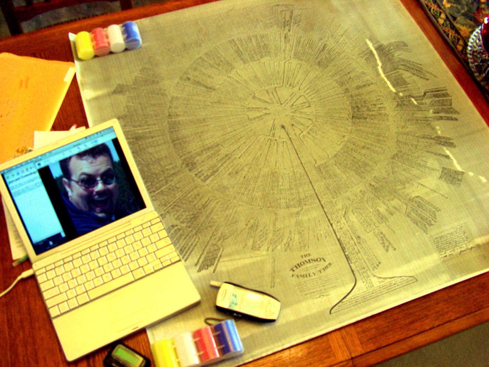
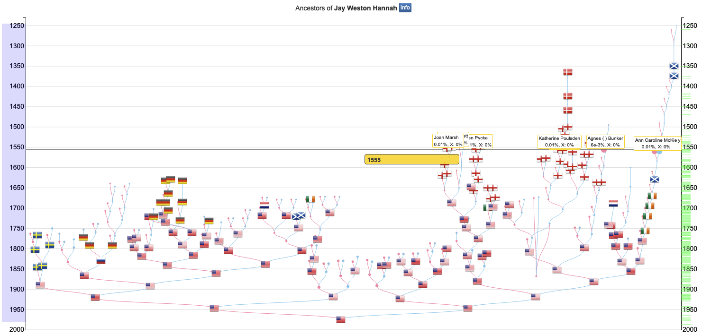

Updated 2024-06-17. Updates welcome.
Hello! My name is Jay Weston Hannah. I’m a computer geek currently living in Omaha, Nebraska, USA. My homepage is jays.net and my email address is <jay(at)jays(dot)net>. This is my fault, so I’m your point of contact for additions, corrections, removal, complaints, etc.
2005 genesis: Earlier this year I was inspired to take up genealogy as a hobby. Mere months later with much help from genealogy genius relatives of mine, family trees lying about, conversations, and lots of data entry I’ve compiled over 4000 of my relatives into my genealogy database (GEDCOM).

2014 update: Sadly, both of my cousins, from whom this data originated, have now passed away. RIP uncle Larry and aunt Kandi. A lot of Kandi’s data is also on TribalPages. We also have a FaceBook group.
2024 update: After our 2023 trip to Scotland and Ireland, Dad finished his research all the way back to Patrick A’Hannay, born in Scotland in 1250. I’m using new tools now, see below.
 Snapshot from an awesome run-locally Javascript tool I found.
Gary McVey emailed me. We’re not sure if he’s related to me or not yet, but I do have a lot of McVey’s in my data. Here’s how to get to the oldest McVey to me:
I1109 Marion MCVEY's wife
I1108 Charity SCARBOROUGH's sister
I1094 Ruth SCARBOROUGH's daughter
I1067 Zylpha Alzada BYERS's son
I1072 Benjamin Millard HANNAH's son
I1076 James Bradley HANNAH's son
I1265 Jay Weston HANNAH
Seth Donal Hannah (hannah(at)fas(dot)harvard(dot)edu, sethhannah32(at)yahoo(dot)com). We exchanged emails in Jan 2006.
I4135 Seth Donal HANNAH's father
I1042 Robert John HANNAH's father
I997 Maurice Marlo HANNAH's father
I995 Leo Robert HANNAH's father
I987 Robert F. HANNAH's brother
I960 Benjamin Franklin HANNAH's son
I965 John Robert HANNAH's son
I1072 Benjamin Millard HANNAH's son
I1076 James Bradley HANNAH's son
I1265 Jay Weston HANNAHClay Crouch (clay(at)crouch-bachman(dot)org). We exchanged emails in Apr 2006.
I3502 Clay Daniel CROUCH's mother
I3494 Cheryl Dawn BAKER's mother
I3487 Velma LaVerne GOSSER's mother
I3429 Foila Bernice JOY's mother
I3392 Elizabeth "Lizzie" MCINTOSH's mother
I1373 Cordelia BYERS's brother
I1093 Perry BYERS's daughter
I1067 Zylpha Alzada BYERS's son
I1072 Benjamin Millard HANNAH's son
I1076 James Bradley HANNAH's son
I1265 Jay Weston HANNAHZelda Capehart (zcapehart(at)wildblue(dot)net). We exchanged emails in Apr 2006. Sister: Betty Jean Leeper I3726 Zelda Mary HALLOWELL’s mother.
I3724 Lois T. TRUEBLOOD's mother
I3810 Minnie Vioal R. BOGUE's father
I3807 Joseph Dickinson BOGUE's mother
I3957 Millicent "Millie" HIATT's father
I2743 Silas HIATT's brother
I1235 Isom HIATT's daughter
I1104 Eunice HIATT's daughter
I1094 Ruth SCARBOROUGH's daughter
I1067 Zylpha Alzada BYERS's son
I1072 Benjamin Millard HANNAH's son
I1076 James Bradley HANNAH's son
I1265 Jay Weston HANNAHKim Wood (mwood8174(at)wowway(dot)com). We exchanged emails in Sep 2006.
Kim's fathers mother is:
I3433 Helen Ruth JOY's mother
I3392 Elizabeth "Lizzie" MCINTOSH's mother
I1373 Cordelia BYERS's brother
I1093 Perry BYERS's daughter
I1067 Zylpha Alzada BYERS's son
I1072 Benjamin Millard HANNAH's son
I1076 James Bradley HANNAH's son
I1265 Jay Weston HANNAHRoy Blake (roybfizbo(at)yahoo(dot)com). We exchanged emails in Jan 2008
Roy's father is:
I1928 Roy Arthur BLAKE's mother
I1922 Dorothy Lucille DONALDSON's father
I1818 David Gerald DONALDSON's mother
I1736 Katie Ann BUNKER's father
I1600 Jonathan Smith BUNKER's sister
I961 Sarah Angeline BUNKER's son
I965 John Robert HANNAH's son
I1072 Benjamin Millard HANNAH's son
I1076 James Bradley HANNAH's son
I1265 Jay Weston HANNAH We need a hacked version of Gedcom.pm to read Notes properly. Then we need a hacked version of ged2site to get the living people behavior we want, and other fixes.
git clone git@github.com:jhannah/Gedcom.pm.git
git clone git@github.com:jhannah/ged2site.git
cd ged2site
git checkout jays-hacks
perl -I ~/src/Gedcom.pm/lib ged2site -cFdlh 'Jay Weston Hannah' ~/src/private/genealogy/jay.ged
cp -R static-site/* ~/src/jays.net/genealogy/static-site/
cd ~/src/jays.net/genealogy/static-site
find . -name '*.html' -exec tidy -quiet -im -wrap 0 -f errors.txt {} \;Congrats! You’ve generated this website!
This is handy if you’re trying to figure out spacing bugs in long lines:
brew install wdiff
brew install colordiff
perl j2.pl > before
perl -Ilib j2.pl > after
wdiff before after | colordiffIf you want graphical routes between people, GEDitCOM II above does that. For text routing:
perl relation.pl -gedcom_file ~/src/private/genealogy/teten.ged
Enter person to compute relation from: I13100639832
Enter 1 for a single relation, 2 for several, 3 for all: 1
Enter 0 for brief, 1 for English-language relationships: 1
Enter 0 to omit, 1 to output names of all intervening relatives: 1
Enter one person to compute relation to: I13129014810
I13100639832 Stephanie Rose TETEN's father
I13100639833 John Jay TETEN's father
I13100647701 Harvey H. TETEN Jr.'s mother
I13100656957 Sarah Anne GOLDEN's father
I13100699728 Francis Marion GOLDEN's mother
I13100745911 Helen Nancy SITTON's father
I13111273791 William Martin SITTON's father
I13111309434 Jeffrey SITTON's father
I13111338212 Joseph T. SITTON's father
I13111375788 John SITTON's father
I13111447359 Benjamin SITTON's father
I13111482300 John SITTON SUTTON's father
I13111598959 John SUTTON Sr's father
I13111639947 Henry SUTTON's father
I13128380576 Theron SUTTON's father
I13128386295 Sir Henry SUTTON's father
I13128538292 Robert SUTTON's father
I13128542612 Hamon SUTTON III's father
I13128562203 Hamon II SUTTON's father
I13128565895 Robert SUTTON's father
I13128572245 John IV (Sir) SUTTON's father
I13128576575 Sir Knight John III Dudley, Baron of SUTTON's father
I13128594546 Sir John II Knight Lord de Dudley Castle, Baron de Dudley Castle SUTTON's father
I13128613714 Sir John Knight Ist Lord Of Dudley SUTTON's father
I13128616633 Sir Richard Lord De Dudley SUTTON's father
I13128622451 Sir Robert de SUTTON's father
I13128626243 William Sir Knight De SUTTON *'s father
I13128631051 Rowland Sir Lord Sutton SUTTON's father
I13128731489 Hervey Roger (5th Baron of Sutton) (De) SUTTON's father
I13128892719 Hervey Hugh (De) (4th Lord) Earl of Clonard.(aka Roger) SUTTON's father
I13128893546 Hervey Lord SUTTON's father
I13128894604 Hervey (Lord II of Sutton) (De)(Earls of Clonard) SUTTON's father
I13128900088 Hervey Lord I De SUTTON's father
I13128901926 Gilbert Seuton DeNueville Admiral TEUTON's father
I13128962738 Richard2nd Duke of Normandy de Neuville Le TEUTON's father
I13128963265 Balderich Seuton Teutonicus De Courcy Le TEUTON ^'s father
I13128964808 Wigelius Duke Wigerius Charles Of Lorraine Teutonicus) ((De) COURCY's father
I13128970468 Seigneur Charles (De) Courcy CAROLINGIAN's father
I13129001973 Charles III The Simple of France CAROLINGIAN's father
I13129006059 Louis the Stammerer (King Of France) CAROLINGIAN's father
I13129007631 Charles the Bald (Holy Roman Emperor (875–877, as Charles II) and King of West Francia) 's father
I13129010448 Louis I "The Pious" Aquitaine King of France CAROLINGIAN's father
I13129014810 Charles Charlemagne EMPEROR HOLY ROMAN EMPIRE{kind=link}